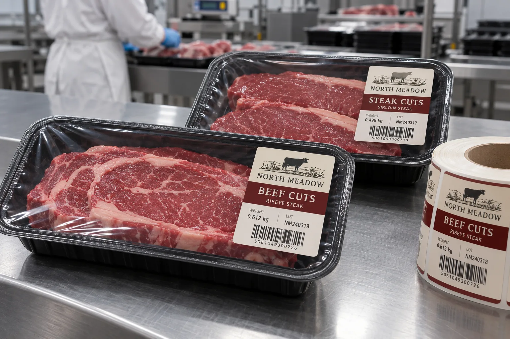
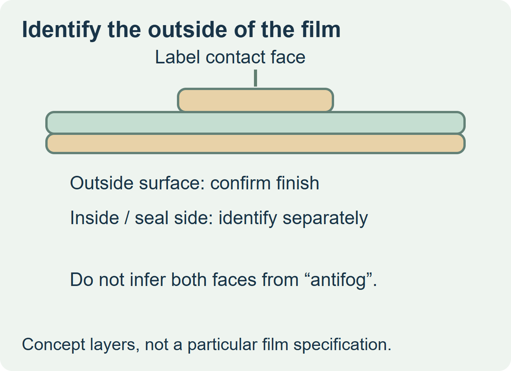
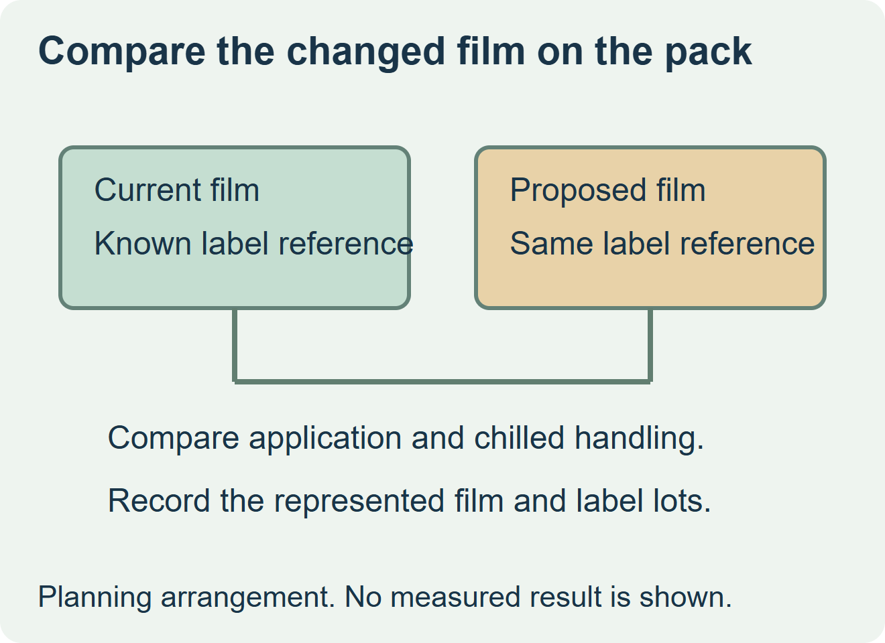

Changing the lidding film? Identify the label-contact face first
Keep the current label proposal for comparison when a new lidding film is introduced. First ask the film supplier to identify the outside surface and the exact reference supplied. If the outer finish or construction changes, repeat the relevant label-to-pack evaluation before treating the old approval as transferable. A film described only as antifog has not answered this question.


For example, Cosmo Films’ 30 TLID-AF technical sheet describes an untreated side and a sealable side, with cold antifog performance on the sealable side. This is one named film example. It does not establish the outside finish of another supplier’s lidding film or approve a ZFU label on it.
| Ask the film owner | Keep with the label trial |
|---|---|
| Which face is outside after sealing? | Film reference, side identification and the actual sealed specimen. |
| What is on the outside face? | Known coating, treatment, printing or lamination; record unknowns rather than infer them from the film name. |
| Which part is being changed? | Current and proposed film identities, with unchanged label construction identified separately. |
| What use is represented? | Labeling temperature, surface moisture, actual chilling and handling sequence. |


Compare the current and proposed films on representative sealed packs using the same identified label construction and application route. Observe edge attachment, creasing and readability at the agreed points in chilled handling. If the replacement cannot be represented, retain the proven route where feasible or request a bounded proposal; do not extend approval from one attractive dry sample.
Keep the film supplier involved in seal and opening review. A label adhesion observation cannot establish package integrity. Print-side and adhesion-side evidence and bounded material substitution address the separate evidence handoffs. For this inquiry, send the two film references and side map, sealed samples, label construction, temperatures and moisture, handling route and quantities. Use the contact page’s email or WhatsApp details to share files; supply, testing and timing require project confirmation.
The sealed perimeter is part of the package
When a buyer sends me a tray width, I do not use the full dimension for the label. The heat-seal flange, corner radius and film tension remove usable area. A sticker placed on the seal line can obscure an inspection point or complicate opening. I want a finished packed tray and the seal map before cutting a die.
HERMA's food-label overview includes chilled meat and other low-temperature packs as distinct applications. Avery Dennison's cold/wet bulletin explains why surface water can reduce initial tack for a specific adhesive system. That is a reason to document the line condition, not a universal material recommendation.
Weight changes; the identity must not
Imagine a composite meat packer using the same black tray for two cuts. The brand and product area can be preprinted, while the weight, lot and date are added on the line. I would reserve a true printable field and inspect its contrast after the film is stretched over different cuts. Small type over dark meat is hard to read even through clear film; a light opaque field can help.
At another composite packing line, tray size changes but the artwork team wants one label roll. I would compare the smallest pack's flat film area and the largest pack's viewing window. A label large enough to dominate the small tray may hide too much of the product on the large one. One die is efficient only when both packages remain usable.
Apply to the outside, after the relevant step
Specify whether labeling happens before or after sealing and cooling. Test the actual top-film surface, the wipe pressure and the chilled distribution route. This article assumes an exterior label; it does not establish direct food contact, food safety approval or seal integrity. Those require the complete packaging system to be reviewed by the responsible specialists.
| Approval point | What to confirm |
|---|---|
| Seal flange | Label footprint stays clear |
| Top film | Flat area, tension and surface condition |
| Variable print | Weight, date and lot remain legible |
| Barcode | Scans on the packed tray |
| Cold route | Adhesion and print after handling |
Our buying view
A smaller label can make a stronger pack
I would trade a little front-panel artwork for a clear seal boundary and a readable weight block. A meat tray earns trust through what a buyer can see and scan, not through maximum label coverage.
Send a finished tray sample
- Sealed trays from each size and lidding-film supplier.
- Seal-flange map and label application sequence.
- Variable code method and finished artwork.
- Temperature, surface moisture and handling conditions.
See refrigerated food labels for cold-use basics and barcode verification versus scanning for checkout requirements.
Frequently asked questions
Can a label overlap the tray heat seal?
Do not assume it can. Keep the approved label footprint clear of the sealing flange unless packaging engineers validate another construction.
Can the label touch the meat?
This guide concerns labels on the outside of the lidding film. Any direct-contact construction requires a separate material and regulatory review.
What should be tested after chilling?
Check adhesion, print and variable-data legibility, barcode scans, condensation and any edge lift on the finished packed tray.
Related buyer guides
Review your label specification
Send package photos, label dimensions, material details, quantity and application conditions. Include good and failed samples where possible so the discussion starts with evidence.